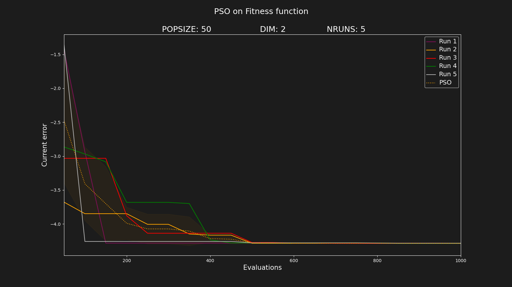

USE(1)USE(1)AbEC - How to use> [ Home ][~]$ OverviewAfter cloning the repository in our computer, we already have enough to run the framework. The directory created is AbEC, and inside of it contains all the files needed to configure and to use the framework..
As a adjustable framework, we need to configure it before use. This configuration is made through three configuration files, where we can set which components and what values for the hyper-parameters we want to use. These files are:These files are located in AbEC/abec/. After cloning the repository:
- algoConfig.ini: Where it is the configuration related to the functioning of the algorithm itself (e.g. Population size, optimizers, ...).
- frameConfig.ini: Where it is the configuration of the framework parameters (e.g. number of runs, path of the files, number of evaluations, ...).
- problemConfig.ini: Where it is the configuration of problem (e.g. number of dimensions, dynamic or not, ...).
$ cd AbEC/abec
Below a description and how to use these files is made.[~]$ Configuration filesAs a default configuration, the parametrization of the frameConfig.ini and problemConfig.ini files showed in the below explanation is used. This means that if any these configuration files is not found, the default configuration of their will be used.
In that way, the only mandatory file is the algoConfig.ini.
When editing the configurations file, you just need to include the parameters that you want to set, the others are set by default. For the boolean configurations (bool), unless the opposite is said, 1 means enabled and 0 means disabled.> algoConfig.ini
This is the main configuration file, where we are going to set which optimizers, components and hyper-parameters, that it will compose our algorithm. Below it is the entire file and a description of each line and how to set it (in this file, for example, it is configured the algorithm Particle Swarm Optimization, known as PSO). > [ file ]
{
"__COMMENT__": "BASIC CONFIGURATION",
"ALGORITHM": "PSO", -> Name you want to give the algorithm. (char)
"POPSIZE": 50, -> Number of individuals in the population. If there are more than one population, this number applies for each subpopulation. (int)
"MIN_POS": -10, -> Min value of the search space. (int)
"MAX_POS": 10, -> Max value of the search space. (int)
"__COMMENT__": "OPTIMIZER CONFIGURATION",
"GA_POP_PERC": 0, -> Percentage of the individuals in the population that it will perform the Genetic Algorithm (GA). (float) in [0, 1]
"GA_ELI_PERC": 0.2, -> Hyper-parameter percentage of the elit in the GA population. (float) in [0, 1]
"GA_CROSS_PERC": 1, -> Hyper-parameter percentage of the population to consider in GA population when applies the crossover. (float) in [0, 1]
"GA_MUT_PERC": 0.1, -> Hyper-parameter probability of the mutation in the GA population. (float) in [0, 1]
"GA_MUT_STD": 1, -> Hyper-parameter standard deviation of the normal distribution used in the mutation. (float) in ]0, MAX_POS-MIN_POS]
"GA_ENCODER": 0, -> Use encoder in the GA individuals. If used, the values of the individuals will be converted into binary and the operators will apply in the bit level. (bool)
"GA_INDSIZE": 16, -> If using encoder, the size of the individuals, number of bits to represent each dimension. (int) in [1, 64]
"PSO_POP_PERC": 1, -> Percentage of the individuals in the population that it will perform the Particle Swarm Optimization (PSO). (float) in [0, 1]
"PSO_PHI1": 2.05, -> Hyper-parameter σ1 of the PSO. (float) in [0, 10]
"PSO_PHI2": 2.05, -> Hyper-parameter σ2 of the PSO. (float) in [0, 10]
"PSO_W": 0.729, -> Hyper-parameter ω of the PSO. (float) in [0, 10]
"PSO_MIN_VEL": -10, -> Min value of the speed of the PSO individuals. (float) in [-(MAX_POS-MIN_POS), MAX_POS-MIN_POS]
"PSO_MAX_VEL": 10, -> Max value of the speed of the PSO individuals. (float) in [-(MAX_POS-MIN_POS), MAX_POS-MIN_POS]
"DE_POP_PERC": 0, -> Percentage of the individuals in the population that it will perform the Differential Evolution (DE). (float) in [0, 1]
"DE_F": 0.5, -> Hyper-parameter F of the DE. (float) in [0, 10]
"DE_CR": 0.7, -> Hyper-parameter CR of the DE. (float) in [0, 10]
"ES_POP_PERC": 0, -> Percentage of the individuals in the population that it will perform Evolutionary Strategy (ES). (float) in [0, 1]
"ES_RCLOUD": 0.2, -> Hyper-parameter rcloud of the ES. (float) in ]0, MAX_POS-MIN_POS]
"__COMMENT__": "COMPONENTS CONFIGURATION",
"COMP_CHANGE_DETECT": 0, -> Change detection component. (bool)
"COMP_CHANGE_DETECT_MODE": 0, -> Change detection mode: 0 - External trigger; 1 - Reevaluation. (int) in [0, 1]
"COMP_MULTIPOP": 0, -> Multipopulation component. (bool)
"COMP_MULTIPOP_N": 10, -> Hyper-parameter number of subpopulations of the Multipopulation component. (int) > 1
"COMP_MUT": 0, -> Mutation component. (bool)
"COMP_MUT_PERC": 0.05, -> Hyper-parameter probability of the mutation in the population. (float) in [0, 1]
"COMP_MUT_ELI": 0.5, -> Hyper-parameter percentage of elit individuals to consider in the mutation component. (float) in [0, 1[
"COMP_MUT_STD": 0.1, -> Hyper-parameter standard deviation of the normal distribution used in the mutation component. (float) in ]0, MAX_POS-MIN_POS]
"COMP_EXCLUSION": 0, -> Exclusion component. (bool)
"COMP_EXCLUSION_REXCL": 22.9, -> Hyper-parameter exclusion radio (rexcl) of the Exclusion component. (float) in ]0, MAX_POS-MIN_POS]
"COMP_ANTI_CONVERGENCE": 0, -> Anti-convergence component. (bool)
"COMP_ANTI_CONVERGENCE_RCONV": 39.7, -> Hyper-parameter anti-convergence radius (rconv) of the Anti-convergece component. (float) in ]0, MAX_POS-MIN_POS]
"COMP_LOCAL_SEARCH": 0, -> Local-search component. (bool)
"COMP_LOCAL_SEARCH_ETRY": 20, -> Hyper-parameter number of tries (Etry) of the Local-search component. (int) > 0
"COMP_LOCAL_SEARCH_RLS": 1 -> Hyper-parameter local search radius (rls) of the Local-search component. (float) in ]0, MAX_POS-MIN_POS]
}
> frameConfig.ini
This file is used to setup the framework configuration, like, the metrics to be calculated, number of runs and etc. Below it is the entire file and a description of each line and how to set it. > [ file ]
{
"__COMMENT__": "FRAMEWORK CONFIGURATION",
"RUNS": 5, -> Number of runs. (int) > 0
"FINISH_RUN_MODE": 0, -> Mode to finish the run. 0 - Fixed-budget, finish when achieve a fixed number of evaluations (int) in [0, 1]; 1 - Fixed-target, run until achieve a error less than a fixed target. (float) > 0
"FINISH_RUN_MODE_VALUE": 1000, -> Number of evaluation if FINISH_RUN_MODE = 1 (int) > 1; Target error if FINISH_RUN_MODE = 1 (float) > 0.
"SEED": 42, -> The seed for the runs. (float)
"PLOT": 0, -> Save the performance curves of the runs. (bool)
"CONFIG_COPY": 1, -> Save the configuration files. (bool)
"OFFLINE_ERROR": 0, -> Calculate the offline error of the runs. (bool)
"BEBC_ERROR": 0, -> Calculate the best before change error. (bool)
"PATH": "../examples", -> Path to save the generated files. (char)
"FILENAME": "data.csv", -> File name of the performance data. (char)
"LOG_ALL": 0, -> Put all individuals data in the performance data. (bool)
"DEBUG_RUN": 1, -> Debug in run level. (bool)
"DEBUG_RUN2": 0, -> Debug in run level 2. (bool)
"DEBUG_GEN": 0, -> Debug in generation level. (bool)
"DEBUG_POP": 0, -> Debug in population level. (bool)
"DEBUG_IND": 0 -> Debug in individual level. (bool)
}
> problemConfig.ini
This file is used to setup the problem configuration, like the number of dimensions, if it is a dynamic problem and etc.
The framework provide some benchmarks problems for testing, using for this, the DEAP library. They are:Below it is the entire file and a description of each line and how to set it. > [ file ]
- CIGAR
- PLANE
- SPHERE
- ACKLEY
- BOHACHEVSKY
- GRIEWANK
- H1
- HIMMELBLAU
- RASTRIGIN
- ROSENBROCK
- SCHAFFER
- SCHEFEL
- MPB
{
"__COMMENT__": "PROBLEM CONFIGURATION",
"BENCHMARK": "NONE", -> Name of the benchmark as it is in the list above. If you are going to use your own fitness function (see the next chapter), must put "NONE" here. (char)
"FUNCTION": "function.py", -> Name of the file containing the fitness function in the directory fitnessFunction. (char)
"NDIM": 2, -> Number of dimensions of the problem. (int) > 0
"CHANGES": 0, -> Changes in the environment, for dynamic problems. (bool)
"CHANGES_NEVALS": [5000, 10000, 15000], -> A list containing the number of the evaluations in which the environment should change. (list)
"SCENARIO_MPB": 2, -> Scenario to use in the MPB. (ind) in [1, 3]
"UNIFORM_HEIGHT_MPB": 0, -> Initial height of the peaks in the MPB. if 0 the height will be randomly choosed in the MPB. (int) in [0, 100]
"MOVE_SEVERITY_MPB": 1.5, -> The distance a single peak moves when peaks change in the MPB. (float) in ]0, 100]
"MIN_HEIGHT_MPB": 30, -> Minimum height of the peaks in the MPB. (float) in [0, 100]
"MAX_HEIGHT_MPB": 70, -> Maximum height of the peaks in the MPB. (float) in ]0, 100]
"MIN_WIDTH_MPB": 1, -> Minimum width of the peaks in the MPB. (float) in [0, 100]
"MAX_WIDTH_MPB": 12, -> Maximum width of the peaks in the MPB. (float) in ]0, 100]
"MIN_COORD_MPB": 0, -> Minimum coordinate for the centre of the peaks in the MPB. (float) in [0, 100]
"MAX_COORD_MPB": 100, -> Maximum coordinate for the centre of the peaks in the MPB. (float) in [0, 100]
"LAMBDA_MPB": 0.5 -> Correlation between changes in the MPB. (float) in [0, 100]
}
[~]$ Fitness FunctionIf you selected "NONE" in the parameter "BENCHMARK" of the problemConfig.ini, that means that you want to define your own fitness function and not use a benchmark.> function.py
To define the fitness function, you need to create a file that will evaluate the solutions of your algorithm (i.e. "function.py") in the fitnessFunction directory, and put this name in the parameter "FUNCTION" of the problemConfig.ini. This file should contain a python method named function(x) where the argument x is a list with "NDIM" dimensions and represent a solution to be evaluated.
The following command create and open the file:
$ nano fitnessFunction/function.py
Then, we define the function inside the file, like this:
def function(x):
[~]$ RunningOnce the configuration files are done, it is time to run the algorithm. To do that we just need to run the script abec.py that it is located in AbEC/abec, the same directory as the configuration files.
The following command do the job:
$ ./abec.py
However, during the experiments it may be convenient to have the files of different configurations (instances) of the algorithms in specific directories. Therefore, it is possible to specify the path where the configuration files are located, and this becomes the default path during the execution of the algorithm. To do so, just add the -p argument when calling the framework script, like this:
$ ./abec.py -p PATH
[~]$ DataThe files generated during the optimization time, as well the plots and the metrics, are going to be in the path defined in the frameConfig.ini file. So, in our example, the files will be saved in:
AbEC/examples/PSO/YYYY-MM-DD/mm-ss/
Where YYYY, MM, DD, mm, ss are the year, month, day, minute and second, respectivetely, of the moment in which the algorithm started to run.
And the files generated it will be:
- data.csv: CSV file containing the performance data of the runs.
- offlineError.txt: TXT file containing the value of the offline error. In the case where there were more than one run, the value will be the avarage.
- optima.csv: CSV file containing the optimal points.
- algoConfig.ini: Copy of the algoConfig.ini file used in the runs.
- frameConfig.ini: Copy of the frameConfig.ini file used in the runs.
- problemConfig.ini: Copy of the problemConfig.ini file used in the runs.
[~]$ ExampleAs a examples lets define a function that represents the following surface in a 3D space, and we want to minimize, that is, we want to find the coordinates (x, y) that represents the minumum value of the function.Be free to use this framework.
However, before of it, lets create a directory where we want to run our experiements. So we create the directory example1 in the directory AbEC/examples/.
$ mkdir ../examples/example1
And inside of this directory, we edit our configuration and function files.
Below is how the surface looks like:

Represented by the following equation:
With A = 10 and B = 2. So, the function.py file will be like: > [ file ]
$ nano fitnessFunction/function.py
import numpy as np
def function(x):
fitness = 5*x[0]*np.exp(- ( ((x[0])**2) + ((x[1])**2) )/4)
return fitness
And now we need to set the configuration files. For the example lets use a classical PSO algorithm, without any components.
> algoConfig.ini
Starting with the algoConfig.ini, we are just going to set the optimizer to perform PSO and the rest just leave the default configuration. So, out file is something like this: > [ file ]
$ nano ../examples/example1/algoConfig.ini
{
"ALGORITHM": "PSO",
"POPSIZE": 50,
"MIN_POS": -10,
"MAX_POS": 10,
"PSO_POP_PERC": 1,
"PSO_PHI1": 2.05,
"PSO_PHI2": 2.05,
"PSO_W": 0.729,
"PSO_MIN_VEL": -10,
"PSO_MAX_VEL": 10
}
> frameConfig.ini
In the frameConfig.ini we are just going to edit the number of evaluations in the parameter "FINISH_RUN_MODE_VALUE". The file is something like this: > [ file ]
$ nano ../examples/example1/frameConfig.ini
{
"RUNS": 5,
"FINISH_RUN_MODE": 0,
"FINISH_RUN_MODE_VALUE": 1000
}
> problemConfig.ini
Starting with the algoConfig.ini, we are just going to set the optimizer to perform PSO and the rest just leave the default configuration. So, out file is something like this: > [ file ]
$ nano ../examples/example1/problemConfig.ini
{
"BENCHMARK": "NONE",
"NDIM": 2,
"FUNCTION": "function.py"
}
Once everything is configured, lets run!
$ ./abec.py -p ../examples/example1
The output will be something like this below, and you should confirm the configuration and then press enter to run the algorithm.
======================================================
AbEC -> Ajustable Evolutionary Components
A framework for Optimization Problems
======================================================
[ALGORITHM SETUP]
- Name: PSO
- Individuals p/ population: 50
- Optimizers (percentage of each population):
-- [PSO]: 100%
---- Phi1: 2.05
---- Phi2: 2.05
---- W: 0.729
- Components:
[FRAMEWORK SETUP]
- RUNS: 5
- NEVALS p/ RUN: 1000
- SEED: 42
[PROBLEM SETUP]
- Name: Fitness Function
- NDIM: 2
[Press enter to start...]
And finally, this is the result:
[START]
[RUN:01][GEN:0020][NEVALS:001000][POP 0001][BEST 0023:[-1.423860858241795, -0.03797111096753128]][ERROR:-4.2871][Eo:0.0000]
[RUN:02][GEN:0020][NEVALS:001000][POP 0001][BEST 0012:[-1.3549695161232402, 0.0021081511144579457]][ERROR:-4.2812][Eo:0.0000]
[RUN:03][GEN:0020][NEVALS:001000][POP 0001][BEST 0007:[-1.400093717163085, -0.017481671577360802]][ERROR:-4.2881][Eo:0.0000]
[RUN:04][GEN:0020][NEVALS:001000][POP 0001][BEST 0050:[-1.3844698998965557, -0.02541731949895054]][ERROR:-4.2862][Eo:0.0000]
[RUN:05][GEN:0020][NEVALS:001000][POP 0001][BEST 0038:[-1.434225779203995, 0.001410062438234494]][ERROR:-4.2880][Eo:0.0000]
==============================================
[RUNS:5]
[POS MEAN: [-1.3995239541257343, -0.015470377698230037] ]
[FIT MEAN: -4.29(0.00)]
==============================================
File generated: ../examples/PSO/2023-6-8/19-48/data.csv
Time Exec: 2.886240243911743 s
[END]
Thx :)
Where we can see that our solution is something around x≃-1.3995 and y≃-0.0155.
And to see the files generated by running the algorithm:
$ ls ../examples/example1
algoConfig.ini data.csv frameConfig.ini optima.csv problemConfig.ini
Congratulations!! you now have runned the algorithm on the problem that you defined. It depends on the context, but a usual natural next step is to visualize the performance curve of the algorithm. For this, the framework provides a script to visualize the current error of the algorhtm during the optimization process. To use this feature, go to the directory AbEC/abec/plot/currentError/. In this directory there is a configuration file, named config.ini which allows us to setup some characteristics of the plot, like axes limits, title, name of the file, etc..
Using this script is possible to plot up to 4 graphs in the same figure, if you want to use for example, to compare different algorithms or setups. To execute the plot feature you can use the following command:
$ ./currentErrorPlot.py -p PATH DATA1 .... DATA4
Here, PATH is the path for to where there are the runs that you want to plot and DATAX are the directories of the up to 4 different setups.
So, for the our example, we can use the following command:
$ ./currentErrorPlot.py -p ../../../examples/PSO/2023-6-8 19-48
and then will be generated a figure with our performance curve of the current error. Like this:

We had 5 runs in our example, we can also plot each runs individually. For this the parameter "ALLRUNS" need to be set in 1. And then the result is gonna be:

>> ALTERNATIVE <<
For this example, as is a differentiable function, we could find the minimum points algebraically using the derivatives. For this, we just need to set the first derivative of the function equal to zero.

As is a multivariate function, we need to perform the partial derivative for each variable, and then set to zero to find the values, just like this:

In our case:

And then, now we know the the optimal points are:
And then the function.py it would be something like: > [ file ]
import numpy as np
optimal = [-np.sqrt(2), 0]
def equation(s):
return return 5*s[0]*np.exp(- ( ((s[0])**2) + ((s[1])**2) )/4)
def function(x):
opt = equation(optimal)
fit = equation(x)
error = abs(opt - fit)
return error
and the plots:
>> BONUS <<
Below is the performance curve of four different algorithms (PSO, GA, DE, ES) and with 30 runs, applied to the problem we defined above on the same plot for comparison.
The shadow around the algorithm line refers to the standard deviation of the 30 runs.
For today that's all folks.
---------------------------------------------------------------------------------------------
AbEC © 2023.